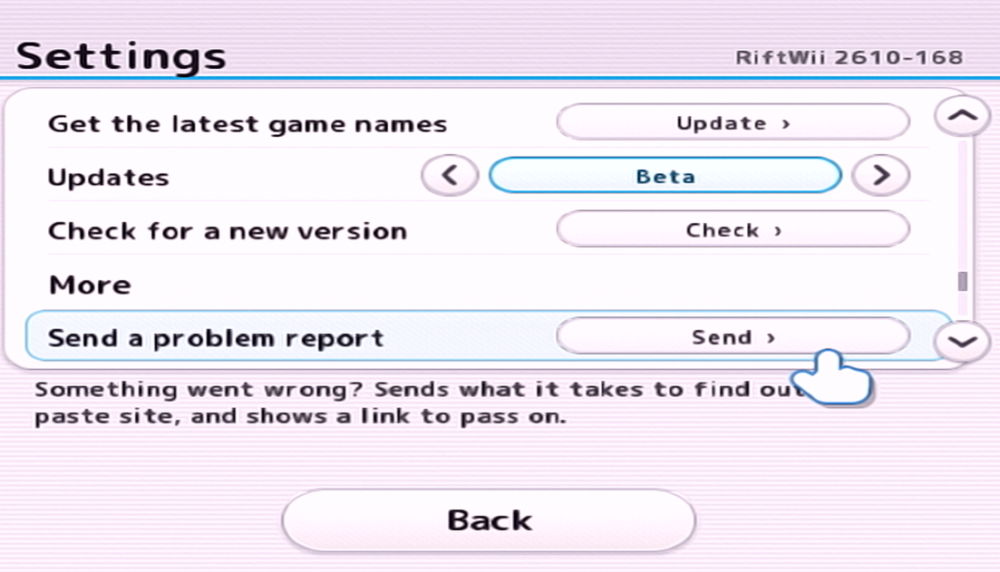
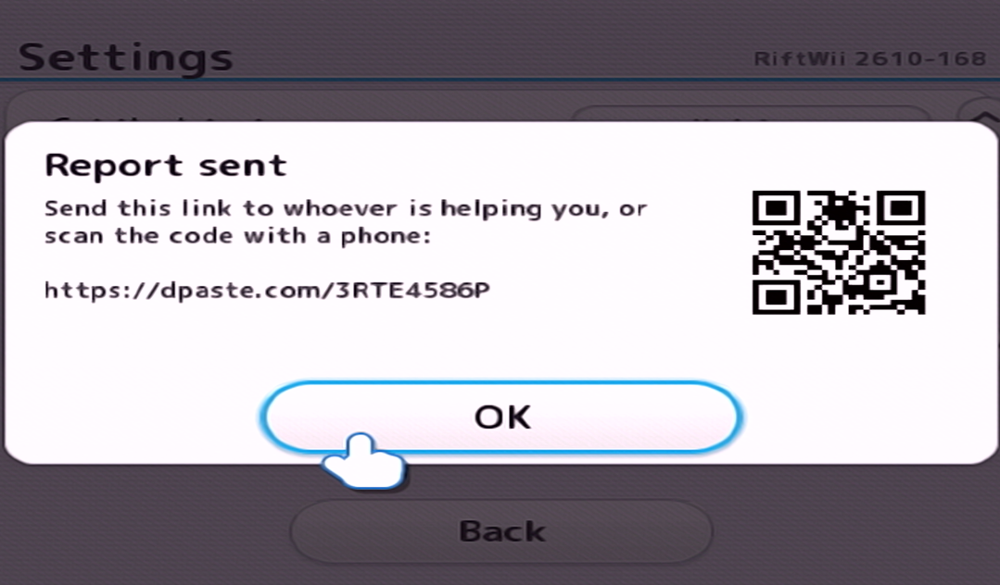

Having problems?
Here's a few things you can do to get you back on track.
Send a Report
You can create a report by going to Settings > Send a problem report. This will gather up all the info we need to try and fix your problem.

Once it's done, send us the QR Code or the link generated in our Discord Server so that we can troubleshoot it.

Join the Discord
Download the Stable Version
If you're looking to just play, try downloading and using the Stable Version of RiftWii. Sometimes the exxperimental features break, so the Stable version might be the best option if you don't need all the features:
Latest Stable Version